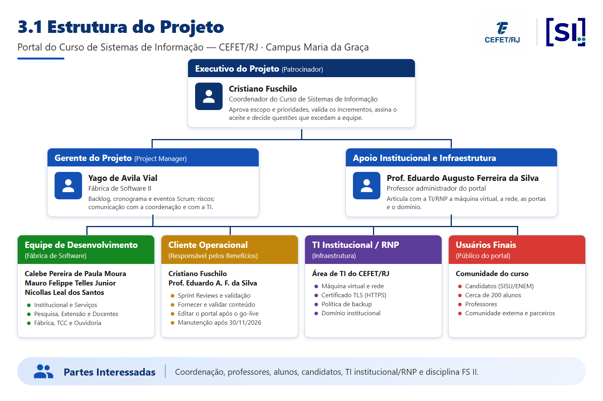

Aprovação do Termo de Abertura
A aprovação do Termo de Abertura do Projeto indica uma compreensão do propósito e do conteúdo descritos neste entregável. Ao assinar este entregável, cada indivíduo concorda que o trabalho deve ser iniciado neste projeto e os recursos necessários devem ser comprometidos conforme descrito neste documento.
Seção 1. Visão Geral do Projeto
1.1 Declaração do problema
As informações do Bacharelado em Sistemas de Informação do CEFET/RJ (Campus Maria da Graça) estão concentradas em uma página legada do portal central da instituição. A estrutura é limitada a uma única página, a coordenação não tem autonomia para editá-la e toda alteração depende de intermediários técnicos, o que dificulta manter atualizados notícias, corpo docente, documentos, calendário e as informações de ingresso.
Com isso, candidatos, cerca de 200 alunos, professores e a comunidade externa não encontram em um único ponto confiável as informações do curso, e não há espaço para divulgar a produção acadêmica (projetos de pesquisa e extensão, iniciação científica, TCCs) nem a Fábrica de Software. O canal atual também não segue os padrões de governo eletrônico exigidos de um serviço digital público: Design System gov.br, acessibilidade (eMAG/WCAG) e LGPD.
Na Fábrica de Software I, a equipe levantou os requisitos (RN01–RN12, RF01–RF34, RNF01–RNF12, RI01–RI07) e entregou um MVP funcional do portal. O Business Case (Partes I e II) avaliou três alternativas e recomendou a Alternativa B – Portal WordPress com tema gov.br, por ser a única que atende integralmente aos resultados e benefícios esperados dentro do prazo do semestre, sem desembolso financeiro obrigatório. Este Project Charter autoriza a Fábrica de Software II a concluir, implantar e transferir o portal à coordenação.
1.2 Descrição do Projeto
O Portal do Curso de Sistemas de Informação é um portal web institucional, público e sem área logada para visitantes,
construído sobre o WordPress com o tema próprio portal-si-cefet, baseado no Design System do Governo Federal
(gov.br). É desenvolvido pela Fábrica de Software do próprio curso, em continuidade ao MVP da Fábrica de Software I, e
gerenciado com Scrum adaptado ao contexto acadêmico, em sprints de 15 dias com entrega demonstrável à coordenação.
Seu objetivo principal é oferecer à coordenação e à comunidade do curso um canal oficial que permita:
- Centralizar as informações acadêmicas e administrativas do curso: ingresso, grade curricular e fluxo de disciplinas, calendário, corpo docente, documentos, vida estudantil e contato;
- Divulgar a produção do curso: projetos de pesquisa e extensão, iniciação científica, repositório de TCCs, Fábrica de Software, notícias, eventos e galeria;
- Dar autonomia editorial à coordenação, que atualiza o conteúdo pelo painel do WordPress, sem depender de intermediários técnicos nem de novo deploy;
- Atender aos requisitos de acessibilidade (WCAG 2.1 AA / eMAG), privacidade (LGPD) e segurança (HTTPS e backup) de um serviço digital público.
A solução é organizada em módulos (Institucional, Pesquisa e Extensão, Fábrica de Software, Comunicação, Serviços Digitais, Contato e Administração), cobre os requisitos RF01–RF34 da Análise de Requisitos e roda em contêineres Docker (WordPress e MariaDB), publicada com HTTPS por Caddy em máquina virtual provida pela via institucional/RNP. Toda a pilha é de código aberto, sem licenças proprietárias.
1.3 Metas e Objetivos do Projeto
- Concluir os requisitos funcionais RF01–RF34 e os requisitos não funcionais transversais da Análise de Requisitos, a partir do MVP da Fábrica de Software I.
- Popular o portal com conteúdo real validado pela coordenação: coordenação e contato, corpo docente, ao menos 5 notícias, documentos oficiais, calendário 2026, grade e ementas.
- Implantar o portal em produção no servidor institucional, com HTTPS e rotina de backup, até 15/11/2026.
- Entregar credenciais de administrador e treinamento aos professores Cristiano Fuschilo e Eduardo Augusto Ferreira da Silva, que assumem a operação e a manutenção técnica.
- Obter o aceite operacional da coordenação e o aceite acadêmico da disciplina até 30/11/2026.
- Alcançar os resultados R1–R5 e os benefícios B1–B10 definidos no Business Case Parte I.
1.4 Escopo do Projeto
| Projeto inclui | Projeto exclui |
|---|---|
|
|
1.5 Fatores Críticos de Sucesso
- Disponibilização da máquina virtual de produção, do domínio e do certificado TLS pela TI institucional/RNP a tempo do go-live.
- Fornecimento ou validação do conteúdo oficial pela coordenação dentro dos prazos de cada sprint.
- Participação da coordenação nas Sprint Reviews quinzenais para validar os incrementos.
- Disponibilidade da equipe (cerca de 10 h/semana por integrante) ao longo do semestre, conciliada com as demais disciplinas.
- Adoção do painel WordPress pelos professores administradores após o treinamento.
- Manutenção técnica contínua (atualizações de segurança e verificação de backup) após 30/11/2026.
1.6 Premissas/Suposições
- A coordenação permanecerá disponível para validação de conteúdo, Sprint Reviews e aceite.
- A TI institucional/RNP proverá a máquina virtual, o domínio e as portas necessárias em tempo hábil; até lá, a VM de homologação serve de contingência.
- WordPress, MariaDB e Docker permanecem a pilha tecnológica acordada.
- O conteúdo oficial (textos, fotos, documentos e dados dos docentes) será fornecido ou validado pela coordenação e pelos professores.
- Os usuários finais acessarão o portal por navegador, com conexão à internet, sem necessidade de login.
- Os professores Cristiano Fuschilo e Eduardo Augusto Ferreira da Silva assumirão a manutenção técnica após o encerramento da disciplina, com apoio de turmas seguintes da Fábrica de Software.
- A adoção da nova denominação UFCI/RJ (Lei nº 15.521/2026) no portal acompanhará a publicação da identidade visual oficial da instituição.
1.7 Restrições
- Prazos acadêmicos fixos: produto em produção até 15/11/2026 e aceite até 30/11/2026.
- Equipe limitada a quatro estudantes em dedicação parcial (cerca de 10 h/semana cada), com outras disciplinas e avaliações.
- Inexistência de orçamento financeiro direto: uso exclusivo de software livre e de infraestrutura institucional/RNP.
- Os requisitos inversos RI01–RI07 permanecem fora do escopo.
- Observância das políticas institucionais de segurança, acesso e proteção de dados (LGPD).
- A substituição da página legada no domínio cefet-rj.br depende de autorização da coordenação e da TI institucional.
Seção 2. Autoridade do Projeto e Marcos
2.1 Autoridade de Financiamento
- Valores reais (desembolso efetivo): R$ 0 na implantação. O trabalho da equipe é realizado no âmbito da disciplina Fábrica de Software II, como esforço acadêmico não remunerado, com software livre (WordPress, MariaDB, Docker, Caddy) e infraestrutura institucional/RNP. Na operação, o único desembolso previsto é opcional: até R$ 600/ano em armazenamento externo de backup.
- Custo econômico (Business Case Parte II): valorando as horas com as referências do modelo institucional (R$ 35/h para estudantes, R$ 100/h para professores e R$ 80/h para TI), o projeto custa R$ 31.234 na implantação, com contingência de 15%, e R$ 4.485 por ano na manutenção.
- Valores realísticos (referência de mercado): se o mesmo escopo fosse contratado de profissionais, sem a doação de esforço da equipe acadêmica e com hospedagem comercial, a implantação custaria cerca de R$ 80.000 e a manutenção cerca de R$ 11.700 por ano, conforme a tabela abaixo. Em dois anos, seriam cerca de R$ 91.700, contra R$ 35.719 de custo econômico e até R$ 600 de desembolso real. O valor mantém o projeto na faixa de porte médio (R$ 25 mil a R$ 200 mil) das diretrizes de dimensionamento de projetos.
- A utilização de recursos institucionais (máquina virtual, domínio e certificado) está condicionada à autorização da TI institucional/RNP e da coordenação do curso.
| Item | Base de cálculo | Valor estimado |
|---|---|---|
| Implantação (FS II) | ||
| Gestão do projeto (gerente) | 140 h × R$ 130/h | R$ 18.200 |
| Desenvolvimento WordPress (3 desenvolvedores) | 420 h × R$ 100/h | R$ 42.000 |
| Infraestrutura e apoio de TI | 16 h × R$ 110/h | R$ 1.760 |
| Validação, conteúdo e governança (coordenação) | 48 h × R$ 100/h | R$ 4.800 |
| Treinamento e handover | 16 h × R$ 100/h | R$ 1.600 |
| Divulgação do novo portal | 4 h × R$ 100/h | R$ 400 |
| Hospedagem comercial durante a implantação | 4 meses × R$ 200 | R$ 800 |
| Subtotal | R$ 69.560 | |
| Contingência (15%) | R$ 10.434 | |
| Total de implantação | R$ 79.994 | |
| Manutenção anual | ||
| Suporte técnico WordPress (atualizações, segurança, backup) | 60 h × R$ 100/h | R$ 6.000 |
| Supervisão técnica e decisões (coordenação) | 12 h × R$ 100/h | R$ 1.200 |
| Hospedagem comercial (máquina virtual) | 12 meses × R$ 200 | R$ 2.400 |
| Armazenamento externo de backup | 12 meses × R$ 50 | R$ 600 |
| Subtotal | R$ 10.200 | |
| Contingência (15%) | R$ 1.530 | |
| Total anual de manutenção | R$ 11.730 | |
Premissas da estimativa de mercado: as mesmas horas do Business Case Parte II (560 h da equipe em 14 semanas); valores horários de referência para profissionais contratados como pessoa jurídica no Rio de Janeiro em 2026 (gerente de projeto R$ 130/h, desenvolvedor WordPress pleno R$ 100/h, analista de infraestrutura R$ 110/h e horas docentes R$ 100/h); hospedagem em máquina virtual comercial a R$ 200/mês. Não inclui o esforço da Fábrica de Software I (MVP), tratado como custo afundado; uma contratação desde o início, sem o MVP, custaria mais.
2.2 Autoridade de Supervisão do Projeto
- A supervisão do projeto é exercida pelo Executivo do Projeto (Patrocinador), Cristiano Fuschilo, Coordenador do Curso de SI, que aprova escopo e prioridades, valida os incrementos e decide sobre questões que excedam a autoridade da equipe.
- O Gerente do Projeto, Yago de Avila Vial, coordena as atividades, mantém o backlog e o cronograma, conduz os eventos Scrum, comunica-se com a coordenação e com a TI e encaminha as questões que demandem decisão superior.
- O acompanhamento ocorre a cada sprint de 15 dias, na Sprint Review com a coordenação. Alterações relevantes de escopo, prazo ou recursos são submetidas ao patrocinador.
- A publicação no domínio institucional segue as políticas da TI do CEFET/RJ, e a avaliação acadêmica segue as regras da disciplina Fábrica de Software II.
2.3 Marcos Principais do Projeto
| Marco | Entregável | Data planejada de conclusão |
|---|---|---|
| M1 – S0 | Project Charter, cronograma Gantt e backlog aprovados (Sprint 0 – Fundação) | 03/09/2026 |
| S1 | Módulo Institucional completo: grade curricular, vida estudantil, galeria e fluxo de disciplinas (RF03, RF07, RF21, RF26) | 18/09/2026 |
| S2 | Pesquisa, Extensão e Corpo Docente: projetos, iniciação científica, parcerias e importação de docentes (RF09–RF12) | 03/10/2026 |
| S3 | Fábrica de Software e Serviços: showcase, canal de parceiros, serviços acadêmicos e repositório de TCC (RF15–RF16, RF23–RF25) | 18/10/2026 |
| S4 | Requisitos transversais: ouvidoria, administração, busca, SEO, acessibilidade e LGPD (RF28–RF34 e RNF) | 02/11/2026 |
| M2 – S5 | Go-live no servidor institucional, testes, treinamento e entrega de credenciais aos administradores | 15/11/2026 |
| M3 – S6 | Ajustes finais, documentação, apresentação da disciplina e aceite formal | 30/11/2026 |
| — | Contingência: reserva para bloqueios de TI, sem novas funcionalidades | 31/12/2026 |
Seção 3. Organização do Projeto
3.1 Estrutura do Projeto

3.2 Funções e Responsabilidades
| Função | Responsabilidade |
|---|---|
| Executivo do Projeto (Patrocinador) – Cristiano Fuschilo | Aprovar escopo e prioridades, validar os incrementos, assinar o aceite e decidir sobre questões que excedam a equipe. |
| Apoio Institucional e Infraestrutura – Prof. Eduardo Augusto Ferreira da Silva | Articular com a TI/RNP a máquina virtual, a rede, as portas e o domínio. |
| Gerente do Projeto – Yago de Avila Vial | Manter backlog e cronograma, conduzir os eventos Scrum, gerenciar riscos e comunicar o andamento à coordenação e à TI. |
| Desenvolvedores – Calebe Pereira de Paula Moura, Mauro Felippe Telles Junior e Nicollas Leal dos Santos | Implementar e testar os módulos (Institucional e Serviços; Pesquisa, Extensão e Corpo Docente; Fábrica de Software, TCC e Ouvidoria) e documentar a edição de conteúdo. |
| Cliente Operacional (Responsável pelos Benefícios) – Cristiano Fuschilo e Prof. Eduardo Augusto Ferreira da Silva | Participar das Sprint Reviews, fornecer e validar conteúdo, receber credenciais e treinamento, editar o portal após o go-live e responder pela manutenção técnica após 30/11/2026. |
| TI Institucional / RNP | Prover servidor, rede, certificado TLS, política de backup e publicação no domínio institucional. |
| Usuários Finais | Candidatos, cerca de 200 alunos, professores e comunidade externa: usar o portal e, quando consultados, avaliar a clareza e a utilidade das informações. |
3.3 Instalações e Recursos do Projeto
| Categoria | Necessidade de recursos | Finalidade / Aplicação | Responsabilidade |
|---|---|---|---|
| Infraestrutura física | Computadores pessoais dos integrantes | Desenvolvimento, testes locais e documentação. | Equipe do projeto |
| Infraestrutura física | Espaço para reuniões e Sprint Reviews (presencial ou on-line) | Planejamento e validação dos incrementos com a coordenação. | Coordenação / equipe |
| Infraestrutura de TI | Máquina virtual de produção, domínio e certificado TLS | Hospedagem do portal em produção, com HTTPS. | TI institucional / RNP |
| Infraestrutura de TI | Máquina virtual de homologação em nuvem (Oracle Cloud) | Demonstrações nas Sprint Reviews e contingência do go-live. | Gerente do projeto |
| Desenvolvimento de software | WordPress, PHP e MariaDB | Plataforma do portal: gerenciamento de conteúdo e banco de dados. | Equipe de desenvolvimento |
| Desenvolvimento de software | Docker e Docker Compose | Ambiente padronizado de desenvolvimento, homologação e produção. | Equipe de desenvolvimento |
| Desenvolvimento de software | Design System gov.br (tokens e componentes) | Identidade visual e componentes de interface do tema. | Equipe de desenvolvimento |
| Desenvolvimento de software | Editor de código / IDE | Escrita, edição e depuração do tema portal-si-cefet. | Equipe de desenvolvimento |
| Gestão do desenvolvimento | Repositório Git (GitHub) | Versionamento do código e rastreabilidade das alterações. | Gerente do projeto |
| Gestão do desenvolvimento | Backlog e cronograma Gantt (hub FS II) | Planejamento e acompanhamento das sprints. | Gerente do projeto |
| Publicação | Caddy (proxy reverso com Let’s Encrypt) | Publicação do portal com HTTPS. | Gerente do projeto / TI |
| Plugins WordPress | SEO, cache, segurança, formulários e backup (gratuitos) | Indexação, desempenho, proteção e cópias de segurança. | Equipe de desenvolvimento |
| Testes e validação | Lighthouse, PageSpeed Insights e navegadores (Chrome, Firefox, Edge, Safari) | Acessibilidade ≥ 95, desempenho ≥ 70 e compatibilidade (RNF03, RNF05, RNF08). | Equipe de desenvolvimento |
| Conteúdo | Textos, fotos, documentos oficiais e dados dos docentes | População do portal com informação real e validada. | Coordenação / professores |
| Documentação | Guias de deploy, backup e edição de conteúdo | Operação do portal e transferência de conhecimento. | Gerente do projeto / equipe |
| Comunicação | E-mail institucional, mensagens e reuniões on-line | Contato entre equipe, coordenação e TI. | Gerente do projeto |
Seção 4. Pontos de Contato
| Responsável | Papel no projeto | Telefone | |
|---|---|---|---|
| Cristiano Fuschilo | Executivo do Projeto (Patrocinador) – Coordenador do Curso de SI | coord.si@cefet-rj.br | (21) 3297-7905 |
| Prof. Eduardo Augusto Ferreira da Silva | Apoio Institucional e Infraestrutura / Cliente Operacional | ||
| Yago de Avila Vial | Gerente do Projeto | ||
| Calebe Pereira de Paula Moura | Desenvolvedor – Fábrica de Software | ||
| Mauro Felippe Telles Junior | Desenvolvedor – Fábrica de Software | ||
| Nicollas Leal dos Santos | Desenvolvedor – Fábrica de Software | ||
| Área de TI do CEFET/RJ | TI Institucional / RNP |
Seção 5. Glossário
| Termo | Definição |
|---|---|
| Portal SI | Portal do Curso de Sistemas de Informação do CEFET/RJ, objeto deste projeto. |
| Project Charter | Documento que formaliza a autorização e estabelece as diretrizes iniciais do projeto. |
| Business Case | Documento que apresenta a justificativa e a viabilidade do projeto (Partes I e II). |
| Fábrica de Software (FS I / FS II) | Disciplinas do curso em que a equipe desenvolve o portal: a FS I gerou o MVP e a FS II conclui e implanta o produto. |
| MVP | Produto mínimo viável: primeira versão funcional do portal, entregue na FS I. |
| WordPress (CMS) | Sistema de gerenciamento de conteúdo de código aberto usado como base do portal. |
| Design System gov.br | Padrão visual e de componentes do Governo Federal adotado na interface do portal. |
| Scrum / Sprint | Método ágil adotado no projeto; a sprint é o ciclo de 15 dias com entrega demonstrável ao cliente. |
| DoD (Definition of Done) | Critérios que um incremento precisa cumprir para ser considerado concluído. |
| RN / RF / RNF / RI | Regras de negócio, requisitos funcionais, não funcionais e inversos (fora do escopo) da Análise de Requisitos. |
| WCAG / eMAG | Diretrizes internacionais de acessibilidade para conteúdo web e Modelo de Acessibilidade em Governo Eletrônico. |
| LGPD | Lei Geral de Proteção de Dados Pessoais (Lei nº 13.709/2018). |
| RNP | Rede Nacional de Ensino e Pesquisa, via de provisionamento da infraestrutura do portal. |
| Go-live | Entrada do portal em produção, acessível ao público. |
| FTE | Equivalente em tempo integral (Full-Time Equivalent). |
| VPL / TIR | Valor Presente Líquido e Taxa Interna de Retorno, usados no modelo financeiro do Business Case. |
| UFCI/RJ | Universidade Federal de Ciência e Inovação do Rio de Janeiro, nova denominação do CEFET/RJ (Lei nº 15.521/2026). |
Seção 6. Histórico de Revisões
| Versão | Data | Responsável | Descrição |
|---|---|---|---|
| 2.0 | 24/08/2026 | Yago de Avila Vial (Gerente do Projeto) | Emissão do Project Charter da FS II em formato interno (hub FS II). |
| 2.1 | 05/11/2026 | Mauro Felippe Telles Junior (Desenvolvedor) | Elaboração do Business Case Parte II (alternativas, abordagem, recursos, modelo financeiro e recomendação), insumo para a versão 3.0 deste charter. |
| 3.0 | 12/11/2026 | Yago de Avila Vial (Gerente do Projeto) | Adequação ao modelo institucional do CEFET/RJ, com base no Business Case Parte I (Yago de Avila Vial) e Parte II (Mauro Felippe Telles Junior); separação entre valores reais e realísticos na Autoridade de Financiamento. |
Seção 7. Apêndices
7.1 Metodologia e Definition of Done
O projeto adota Scrum adaptado ao contexto acadêmico, com sprints de 15 dias. Cada sprint começa com o Sprint Planning, tem Daily de 15 minutos, refinamento do backlog no meio do ciclo e termina com a Sprint Review junto à coordenação, seguida da Retrospectiva. Duas trilhas correm em paralelo: a trilha de TI (contato, requisitos, provisionamento da VM, HTTPS e deploy) e a trilha de conteúdo (coleta contínua, com pico de população nas Sprints 4 e 5).
Um incremento é considerado concluído (Definition of Done) quando:
- a funcionalidade está implementada no tema WordPress e testada localmente (Docker);
- há conteúdo mínimo real ou o estado vazio está documentado, quando aplicável;
- não há regressão nos requisitos já entregues;
- o incremento foi demonstrado na Sprint Review;
- a documentação de edição foi atualizada, quando houver guia novo.
7.2 Critérios de Aceite
Aceite operacional (M2 – 15/11/2026):
- portal acessível no servidor institucional, com HTTPS, na URL acordada com a TI;
- requisitos RF01–RF34 entregues ou com alternativa funcional documentada;
- requisitos não funcionais críticos atendidos: HTTPS, LGPD e aviso de cookies, acessibilidade e backup documentado;
- conteúdo real populado: coordenação, corpo docente, ao menos 5 notícias, documentos oficiais, calendário 2026, grade e ementas;
- dois professores com perfil de Administrador, treinados, e termo de aceite operacional assinado.
Aceite acadêmico (M3 – 30/11/2026):
- apresentação final da disciplina realizada;
- documentação da FS II entregue (Project Charter, Business Case, cronograma, backlog e guias de operação);
- ajustes solicitados pela coordenação incorporados ou registrados como débito justificado;
- aceite formal do professor da disciplina.
7.3 Documentos Relacionados
- Business Case – Parte I (14/09/2026) e Parte II: justificativa, alternativas, modelo financeiro e recomendação.
- Análise de Requisitos (FS I): RN01–RN12, RF01–RF34, RNF01–RNF12 e RI01–RI07.
- Cronograma Gantt e backlog da FS II.
- Guias de operação: DEPLOY.md, BACKUP.md e guias de edição de conteúdo.